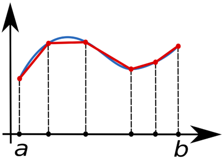
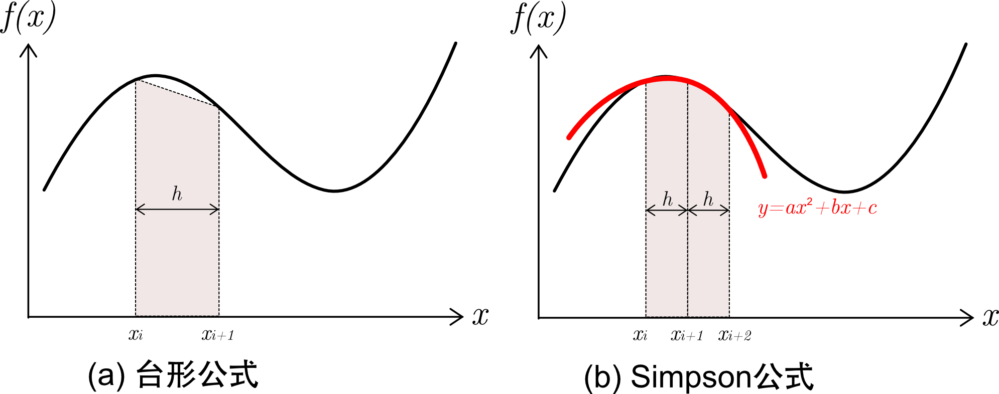

改めて紹介する積分の内容について
私は積分に関しては高専の２年生になってから学び始めたのですが(一般高校で言う高校2年生)、
その2年生の終わりごろにプログラミングに出された課題が台形公式、シンプソンの公式
を用いて三次以下の関数の面積を求めるプログラムを作成せよと言うものでした。
私は積分自体のプログラムは
c++で組んでいたことがあった
のですが、自分は思っている以上に理解できていなかったので、
自分の復習としてこの記事を書こうと思います。
この記事の内容
| 1.積分とは |
| 2.台形公式について |
| 3.シンプソンの公式について |
| 4.実際に書いてみたコード(C言語) |
1.積分とは
まず改めて積分について説明しようと思います。積分とは簡単に言うと対象とするグラフが描く面積を求めることです。
例えばy＝xのグラフの0から1までの面積は小学生の知識で解くと
で0.5ですよね。
それを高校積分の知識で解くと、対象とするグラフをまず
不定積分
したグラフに変換すると、
となり、
その定積分を計算すると、
となります。
今回の場合は三次以下の定積分ですので、知識としてはこれだけで事足ります。
2.台形公式について
台形公式とは、面積を求めたい対象のグラフをいくつかの座標でくぎり、その区切った座標から垂線をおろし、
それで出来上がった図形を台形として面積を求めていく方法です。
多分イラストの方がわかりやすいのでイラストを貼っておきます。↓

上記の場合、まず面積を求めたい区間をa ~ bと定めています。そして、ここで注意したいことなのですが、
私の作成したプログラムでは分ける区間は均等にしています。具体的には分けた区間の幅をh、分割数をnとすると、
となると言うことです。それをもとに複数の台形の面積を求めていけば、本当の面積により近い値を得られます。
今回はプログラムを理解するには理屈が分かれば良いので、さらに詳しい説明は割愛します。
3.シンプソンの公式について
勘の良い方ならもうお気づきかも知れませんが、台形公式の場合、分割して台形を形成していった時に、
対象とするグラフと一つ一つの台形の間の幅が大きいと感じませんでしたか？
その点を修正したのがシンプソンの公式です。(雑に言うと)
こちらも言葉よりもイラストの方がわかりやすいと思うので以下にイラストを貼っておきます。↓

シンプソンの公式の定義上、式としては以下で表されます。
プログラムでは
の方でプログラムを実行していますが、理屈としては上記でいいと思います。
台形公式の場合対象とするグラフと形成した台形の間の幅が大きいと言いましたが、シンプソンの公式の場合、
その幅を二次曲線で表しているため、グラフの形状によっては台形公式よりも誤差が小さくなります。
ただ、形状によるとお伝えした根拠として、例えば一次関数のグラフの面積を求めたいと思ったら、
圧倒的に台形公式の方がより正確に近似値を求めることができますよね。
なぜかというと、対象のグラフと台形の幅がちょうど重なるからです。一方シンプソンの公式の場合
二次曲線で幅を表しているため、直線との幅がより離れてしまいます。
このように台形公式、シンプソンの公式にもより正確に求められるグラフとそうでないグラフがあるので使い分けが必要ですね。
4.実際に書いてみたコード(C言語)
#include
#include
#include
// 関数の補間点を作成する関数。
void calc_interpolation(double **data, double *coef, double a, double b, int n);
//シンプソン公式
double simpson(double **data, int n);
//台形公式
double trapezoid(double **data, int n);
int main(void) {
double a, b, tmp;
double coef[4];
int i, n, sign = 1;
double **data;
printf("3次関数 c3*x^3 + c2*x^2 + c1*x + c0 "
"の係数をc3,c2,c1,c0の順に入力してください\n");
for (i = 3; i >= 0; i--) {
scanf("%lf", &coef[i]);
}
printf("積分区間[a,b]のaとbを入力してください\n");
scanf("%lf %lf", &a, &b);
// a<=bを担保するための処理
if (a > b) {
tmp = a;
a = b;
b = tmp;
sign = -1;
}
// 偶数が入力されるまで繰り返し入力要求
do {
printf("積分区間の分割数を入力してください（偶数限定）\n");
scanf("%d", &n);
} while (n % 2 == 1);
// 配列の動的確保
data = (double **)malloc((size_t)(n + 1) * sizeof(double *));
for (i = 0; i < n + 1; i++) {
data[i] = (double *)malloc((size_t)2 * sizeof(double));
}
// 積分に用いる補間点の計算
calc_interpolation(data, coef, a, b, n);
// 結果の出力部
// 定積分の定義に従った計算を追加する場合は，下の行を有効化
// printf("定義による計算 ：%f\n", sign * definition(data, n));
printf("台形公式 ：%f\n", sign * trapezoid(data, n));
printf("シンプソンの公式：%f\n", sign * simpson(data, n));
// 動的確保した領域の解放
for (i = 0; i < n + 1; i++) {
free(data[i]);
}
free(data);
return 0;
}
// 補間点の計算。座標値(data[i][0],data[i][1])をn+1個作成
void calc_interpolation(double **data, double *coef, double a, double b,int n) {
double h;
int i, j;
// 補間点のx方向の幅を計算
h = fabs((b - a) / n);
// 補間点を計算してdataへ格納
for (i = 0; i < n + 1; i++) {
data[i][0] = a + h * i;
data[i][1] = 0.0;
for (j = 3; j >= 0; j--) {
data[i][1] += coef[j] * pow(data[i][0], j);
}
}
}
double simpson(double **data,int n){
int i;
double ans,h;
ans=0;
h=(data[n][0]-data[0][0])/n;
for(i=0; i